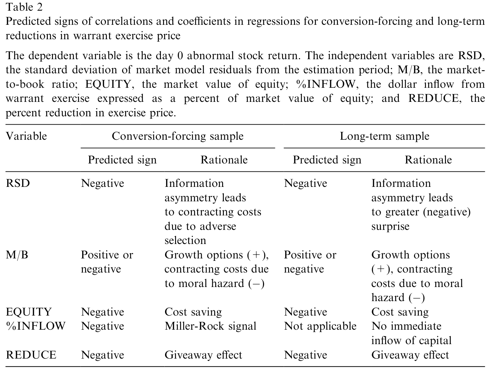
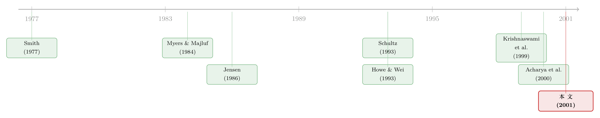

把行权价往下调一调：一份警告信，还是一次精明的融资？
本文读的是 Howe & Su (2001, Journal of Financial Economics)：管理层有权下调自家权证的行权价，这件事在公告日让股价小跌（强制转换型 −1.53%、长期型 −1.15%），看上去像是把好处「送」给了权证持有人；但这些公司在随后三年里却表现不俗——强制转换型不比同行更容易倒闭，长期型甚至显著跑赢对照组。于是作者得出一个反直觉的结论：给管理层这份「调价」的自由裁量权，其实是权证契约里一项有效率的设计。
1 一封看上去像「认输」的公告
先看一条 1991 年的旧闻。Barringer Resources 公司宣布，把它 B 类权证的行权价从 $4.03 砍到 $2.25，今天生效，只管 30 天；到了 3 月 13 日，行权价就会弹回 $4.03。
这是一条很奇怪的公告。公司没有发新股、没有借新债，只是把一张早就发出去的权证的行权价往下挪了一截。对权证持有人来说，这显然是好消息——同样一张纸，凭空更值钱了。可硬币的另一面是：权证一旦被行权，新股就要凭空冒出来，老股东手里的每一股都被稀释。换句话说，这看起来就是一次从股东口袋到权证持有人口袋的财富转移（wealth transfer）。
如果故事到此为止，那这篇论文就没什么意思了：股东被薅了羊毛，股价该跌，跌完收工。但作者偏偏盯住了一个细节——为什么管理层手里会握着这样一把「随时调价」的权力？这把权力被用出来的时候，市场到底在为它定什么价？而被「薅」了的那些公司，后来又活成了什么样？
围绕这一个核心问题——给管理层调低行权价的自由裁量权，到底是股东的负担，还是股东的财富——这篇论文把整条线索一点点抽了出来。
2 先把「调价」分成两种完全不同的动作
要回答这个问题，第一步是承认：不是所有「调低行权价」都是一回事。
Barringer 那种调价是临时的：行权价只在 30 天里走低，过期就弹回原值。临时调价几乎总是发生在这样一种处境——权证此前是价外（out of the money）的，调价后变成价内（in the money）。这时候理性的持有人会怎么做？在行权价弹回去之前赶紧行权，因为现在按临时低价行权拿到的内在价值，超过了等行权价回升后那张权证的「持有价值」。于是临时调价几乎必然带来一次集中的行权。作者把这一类叫做强制转换型（conversion-forcing）调价。
但还有一类是永久调价。直觉上，永久把行权价调低，并不会逼人立刻行权——样本里没有一家公司在公告时在分红，而在没有分红的情况下，提前行权一张美式权证从来都不是最优的，理性的持有人会一直等到到期。所以永久调价本该是「长期型」的。
接着，一个自然的问题是：那永久调价里有没有「伪装成长期、其实也是强制转换」的？有。如果一次永久调价发生在权证到期前 60 天以内，那它和临时调价就没什么两样了——同样是价外变价内，同样会逼出一波行权。为什么是 60 天？作者说，这大致对应一家公司为新股发行做准备所需要的时间（援引 Wall Street Journal, June 20, 2000, p. C1）。
于是分类规则就定了下来：
- 强制转换型：调价是临时的（典型 30 天），或者调价虽永久但权证剩余寿命 ≤ 60 天；
- 长期型（long-term）：两个条件都不满足的永久调价。
这个区分是整篇论文的地基。因为强制转换型调价 ≈ 一次几乎立即发生的股权融资，而长期型调价只是把一纸金融合约重新写了一遍——它当下并不带来任何资本流入。两件事的动机、后果、市场反应，都可能南辕北辙。
作者还顺手给这个分类做了个体检：在能拿到数据的 48 个强制转换型权证里，公告之后的那个季度，在外流通的权证数量骤降了 92.33%——绝大多数确实被行权了。分类方案站得住脚。
最终样本里，强制转换型 154 个（58%），长期型 113 个（42%）。
3 那个 −1.5% 里，其实塞进了三股力量
现在回到那个核心张力：财富转移会压低股价。可如果市场是不完美的，压在股价上的就不止财富转移这一股力量。作者把强制转换型的股价反应拆成了三块：
第一股，财富转移效应（wealth transfer）。 权证升值、股票被稀释，这一块把股价往下拽。
第二股，交易成本的节省。 强制转换型调价本质上是一次股权融资，而它的边际成本很可能比一次承销发行（underwritten offering）低得多——毕竟权证早就发出去了，省掉了重新承销的钱。Smith (1977) 早就指出，配股（rights offering）的自掏腰包成本远低于承销发行。对样本里这些又小又年轻的公司，这一节省尤其可观：强制转换型样本里，靠行权募到的资金中位数只有 $1.89 百万，而按 Smith (1977, Table 1) 的数据，这种规模如果改走承销发行，光发行费用就要吃掉 15.29%。这一股力量，把股价往上托。
第三股，SEO 效应。 这是那个被反复记录的、对季节性股权发行（seasoned equity offering）的负面反应——按 Myers & Majluf (1984) 的逻辑，发新股本身就传递坏消息。这一股，又把股价往下压。（关于发股为何总伴随坏消息、公司又如何反过来「择时」，可参见《公司一发证券股价就跌：是老板在「择时」，还是市场在「定价」？》。）
于是强制转换型的观测到的股价反应，是这三股力量净出来的结果——它可以是负、是零、也可以是正。事先在理论上无法定号，这正是要拿数据说话的地方。
而长期型的拆解又不一样。长期型也有财富转移（往下压），但它不带来当下的资本流入，所以没有「交易成本节省」那一块。取而代之的，是两股相反的信息力量：
- 信号效应（坏消息）：永久调低行权价，等于管理层（被推定为消息灵通的人）亲口承认「股价基本没指望涨过旧行权价了」。这是对股票未来价值的坏消息，会放大财富转移的负效应；
- 激励重置效应（好消息）：当一张权证深度价外时，它内含的激励几乎归零——管理层会觉得「反正怎么努力股价也到不了旧行权价、第二阶段融资根本来不了」，于是干脆躺平。把行权价调低，相当于把这份激励重新装回去，让管理层重新有动力去找好项目。这一股，至少部分抵消前面的负效应。
这套「调低行权价以恢复激励」的逻辑，和高管股票期权的重新定价（repricing）如出一辙（Acharya et al., 2000）——把「水下」的期权调回价内，争议正在于它到底是管理层在赖着不走，还是公司在自救。（这条线，可参见《给「水下」期权重新定价，到底是老板在赖着不走，还是公司在自救？》。）
净效应是正是负？又一次，是一个实证问题。
4 财富转移到底有多大：一段被低估的算术
这里值得停下来，把作者度量财富转移的那段推导一步步走一遍——因为它解释了一个容易被忽略的偏差：用权证升值的金额去衡量财富转移，是会低估的。
设 W 为权证价格、S 为股价、X 为行权价。假定 Black-Scholes 成立：
$$ W = N(d_1)\,S - e^{-rt}N(d_2)\,X $$
权证价值的变化，来自行权价的变化和股价的变化两条渠道。对 W 求全微分：
$$ dW = \frac{\partial W}{\partial S}\,dS + \frac{\partial W}{\partial X}\,dX $$
把两个偏导代进去（BS 公式下 \(\partial W/\partial S = N(d_1)\)、\(\partial W/\partial X = -e^{-rt}N(d_2)\)）：
$$ dW = N(d_1)\,dS - e^{-rt}N(d_2)\,dX $$
但关键的一步在于：股价的变化 dS 本身并不「干净」。它由两部分组成——一部分是财富转移引起的股价变化 \(dS_W\)，另一部分是公告所携带的信息引起的股价变化 \(dS_I\)。即 \(dS = dS_W + dS_I\)。代回去：
$$ dW = N(d_1)\,[\,dS_W + dS_I\,] - e^{-rt}N(d_2)\,dX $$
把它重排，让三股力量各归各位：
前两项合起来才是真正的财富转移效应，第三项反映的是坏消息（\(dS_I < 0\)）造成的权证价值损失。于是结论浮出水面：观测到的权证升值，把财富转移给低估了——因为坏消息那一项偷偷扣掉了一部分本该归入转移的升值。对称地，用股价跌幅去衡量股东的转移损失，则会高估。不过作者论证 \(dS_I\) 在经验上很小，所以仍用权证价值的总变化作为财富转移的度量。
为了进一步钉死这件事，作者还跑了一个回归，把股东的美元损失对权证持有人的美元收益做回归：
$$ \$\text{losses to shareholders} = a + b \cdot \$\text{gains to warrantholders} + e $$
在完美市场里，财富转移应是一美元对一美元，截距 a 该为零、斜率 b 该等于一。截距若显著偏离零，对强制转换型而言其符号就揭示了「成本节省 − SEO 效应」的净方向；对长期型而言则揭示了「负面信息 − 激励重置」的净方向。这个回归把抽象的「净效应符号」变成了一个可以直接检验的截距。
5 一张表，看清两个样本的「预测符号」
在动用数据之前，作者先把横截面要检验的解释变量和它们的预测符号摆成了一张对照表。被解释变量是公告日（day 0）的股票异常收益，解释变量有五个：
- RSD：估计期市场模型残差的标准差，作为信息不对称（information asymmetry）的代理（沿用 Krishnaswami et al., 1999）。信息不对称越大，逆向选择越严重，反应越负——预测符号为负；
- M/B：市账比，作为成长机会的度量。这里符号是模糊的：若代表成长机会，系数为正；若按 Krishnaswami et al. (1999) 解读为道德风险的契约成本，则为负；
- EQUITY：股权市值，即公司规模。小公司直接融资的交易成本更高（Smith, 1977; Altinkilic & Hansen, 2000），调价省下这笔钱——预测符号为负；
- %INFLOW：行权带来的美元流入占股权市值之比。按 Miller & Rock (1985) 的现金流信号，发行规模越大反应越负——预测符号为负；但对长期型不适用，因为长期型公告不带来当下的资本流入；
- REDUCE：行权价下调的百分比，衡量「送」给权证持有人的程度——预测符号为负。

Table 2: summarizes the predictions for the two samples
6 数据与方法
样本期为 1980 年 1 月至 1997 年 1 月。作者在 Dow Jones News Retrieval 上用「warrant」「common stock purchase warrant」「exercise price」等关键词检索，初始得到 440 条公告；剔除 71 条只是反稀释调整（antidilutive adjustment）的、再剔除 35 条新旧行权价信息缺失的，剩 334 条。其中 267 条在 CRSP 上有对应收益，来自 206 家不同公司——这构成股票样本。逐条打印标题、时间戳与正文，确认公告里没有夹带与权证无关的消息。再到 S&P Daily Stock Price Record 上找权证数据，得到 140 个权证，构成权证样本。对照样本按行业（两位 SIC）和规模（股权市值）匹配，会计数据取自 Compustat。
方法上分两块。权证这边，作者直接报告以公告日为中心的窗口内的平均原始收益（而非异常收益，因为关心的就是权证本身被重估了多少），用横截面 t 检验判显著性。股票这边，走标准事件研究：估计期从公告前 120 天到公告前 10 天，市场基准用 CRSP Nasdaq 指数（也试了 S&P 500、CRSP 等权与市值加权，结果类似），并用 Boehmer et al. (1991) 的标准化横截面 t 统计量——这是专门为「事件诱发方差」设计的稳健做法。
至于这些公司本身，确实是一批小公司：强制转换型的股权市值中位数 $13.29 百万、均值 $45.52 百万；长期型中位数 $8.84 百万、均值 $16.07 百万。长期型的规模中位数显著小于强制转换型（5% 水平），但均值差异不显著。
7 反转：被「薅」过的公司，后来活得不错
现在把这条线索收束到它真正的落点。
公告日，两个样本的股价确实都跌了：强制转换型平均异常收益 −1.53%，长期型 −1.15%。如果你只看这一天，故事就是「股东吃亏」。
但真正关键的一步在于追问：这些公司后来怎么样了？
按照一种「代理成本」的悲观叙事，很多发权证的公司迟早会发现自己根本没有正 NPV 的项目；它们会把行权募来的钱挥霍掉，于是失败率该高于正常、业绩该跑输对照。可数据给出的是相反的图景：
- 强制转换型公司的失败率并不高于对照组——募来的那笔（虽然不多但很省成本的）钱，看起来是投进了有利可图的项目，而不是被糟蹋掉；
- 长期型公司在公告后的三年里，显著跑赢它们的对照组——这恰恰印证了「调低行权价重置了管理层激励」的猜想：把深度价外、形同废纸的权证重新拉回有意义的价内，管理层重新有动力去找好项目，于是业绩回来了。
此外还有一个细节支持「钱被用在了刀刃上」：那些在公告里顺带透露了募集资金用途的（全部来自强制转换型样本），市场给出的是一个边际为正的股价反应。市场不傻——当它能看清钱要去哪儿，它愿意为这份信息买单。
于是全文的核心结论立了起来：给管理层「调低行权价」的自由裁量权，是一项有效率的契约设计。 公告日那点小幅下跌，并不是股东受损的证据，而是财富转移、成本节省、SEO 效应（以及长期型那边的信号与激励重置）几股力量净出来的结果；把时间拉长到三年，管理灵活性（managerial flexibility）的好处压过了股东/管理层之间潜在代理冲突的成本。股东和权证持有人之间，并没有实质性的利益冲突。
8 文献脉络
把这篇论文放回它生长的那条线里，会看得更清楚。
最早的根，扎在「融资方式的成本」上：Smith (1977) 比较了配股与承销发行，指出后者的自掏腰包成本高得多——这正是本文「强制转换型调价能替小公司省下高额发行费」论点的源头。紧接着，Myers & Majluf (1984) 奠定了信息不对称下发股是坏消息的范式，也就是本文里那股压低股价的「SEO 效应」。Jensen (1986) 的自由现金流代理成本则提供了反方向的担忧：把行权加速、把现金提前拿进来，会不会反而喂大了代理问题？本文的回答是「没有」。

往后，是一条专门研究权证契约里各种期权式条款的支线。Schultz (1993a) 论证单位 IPO（unit IPO）是一种分阶段融资（staged financing），权证行权本身就是第二阶段融资事件；Schultz (1993b) 实证检验了强制转换式赎回（conversion-forcing calls），发现权证被「最优地」赎回，并记录到赎回公告带来约 3% 的股价下跌。Howe & Wei (1993) 则研究了另一项期权式特征——可延期性（extendability），发现延期公告下权证与股票价值都上升。本文研究的正是这一族里尚未被碰过的一项：管理层下调行权价的裁量权。
近端的两块拼图是：Krishnaswami et al. (1999) 用市场模型残差标准差 RSD 度量信息不对称，给本文提供了横截面里的核心解释变量；Acharya et al. (2000) 关于重置高管股票期权的最优性讨论，则与本文「长期型调价恢复激励」的逻辑直接呼应。本文恰好落在「证券设计 × 期权式条款 × 财富转移与激励」的交汇点上。
评论与延伸（Q&A + 研究方向）
(a) 几个可能的疑问
Q：既然是「财富转移」，为什么股价只跌 1.5%，而不是跌掉权证升值的全部？
因为观测到的股价反应是净效应。强制转换型那边，财富转移（负）被交易成本的节省（正）部分抵消，再叠加 SEO 效应（负）；几股力量相互对冲，留下的就是一个不大的负数。作者还从理论上说明，单看权证升值会低估财富转移、单看股价跌幅会高估股东损失，所以「1.5%」本身并不能直接读成股东净亏多少。
Q：把「永久调价但剩余寿命 ≤ 60 天」也算成强制转换型，会不会是事后凑出来的分类？
这是个合理的担心，但作者给了两道旁证。其一，60 天对应「一家公司为新股发行做准备」的现实周期；其二，更硬的证据是——能拿到流通量数据的 48 个强制转换型权证，在公告后那个季度流通数量骤降
92.33%，说明绝大多数确实被行权了。分类与「是否真的逼出了转换」高度吻合。
Q：长期型公司三年跑赢对照组，会不会只是「幸存者」或基准选得不好？
作者用行业（两位 SIC）加规模匹配构造对照、并用 Boehmer et al. (1991) 的稳健 t 统计量，这能缓解一部分担心。但长期业绩研究对基准模型与匹配方式历来敏感，这一条仍是全文里我个人最想看到更多稳健性的地方（详见下文「对识别的担忧」）。
Q：M/B 的预测符号为什么是「正或负」都行？这不是和稀泥吗？
不是和稀泥，而是两种经济学解读会给出相反的号。若 M/B 代表成长机会，募来的钱投得出去，反应该更不负（正号）；若按 Krishnaswami et al. (1999) 把 M/B 读成道德风险的契约成本（投资不足/资产替代），则潜在道德风险越大、反应越负（负号）。把它写成「模糊」，恰恰是诚实地承认两种机制在打架。
Q：这和 Schultz (1993b) 研究的「强制转换式赎回」有什么不同？
赎回是用一个名义低价逼权证持有人转换，Schultz 记录到约
3%的股价下跌；而本文的强制转换型是通过临时调低行权价来诱发行权，机制不同、且作者强调这是文献尚未碰过的一项裁量权。两者都属于「权证契约里的期权式条款」这一族，但动作和触发逻辑不一样。
Q：为什么没有分红的公司，永久调价就「不会」逼人提前行权？
这是美式期权的经典结论：在标的不分红时，提前行权一张美式看涨期权（权证）从来不是最优的——持有到期总不差。所以只要公告时不分红，永久调价就不会立刻触发行权，它就该被归入「长期型」；除非权证已经临近到期（≤ 60 天），时间价值所剩无几，提前行权才变得划算。
(b) 几个可能的研究问题与提案
1. 把同一套「裁量式重写契约」搬到公司债的条款里。 【经济故事】权证调价本质是「低成本地重写一纸金融合约以恢复激励/便利融资」。公司债的契约（赎回、宽限、重设票息）里也有大量类似的裁量空间——发行人下调转股价、或主动放松契约，到底是向债权人「送钱」，还是恢复了某种被价外条款锁死的效率？ 【可行性】中。需要债券层面的契约变更公告（Mergent FISD 条款数据 + 新闻检索）与配套的债/股价格反应；识别上可借本文的「事件类型二分法」，难点在于干净地把信号效应与财富转移分开。
2. 外资持有人结构如何影响「调价」的市场反应。
【经济故事】权证/可转债的持有人若以外资机构为主，信息不对称（本文的 RSD）与议价能力都会不同，财富转移的方向与幅度可能随持有人身份而变。
【可行性】中偏低。需要权证或可转债的持有人明细，这类数据稀缺；可退而求其次，用机构持股比例做粗代理，但识别力会打折。
3. 调价公告作为「流动性事件」：行权潮如何冲击标的股的流动性。
【经济故事】强制转换型调价会在公告后一个季度内逼出 92.33% 的行权——这等于在短时间里向市场注入大量新股。这波供给冲击会不会暂时压垮标的股的流动性、抬高价差？
【可行性】高。本文已有清晰的事件日与「是否强制转换」分组，配 CRSP/TAQ 的日内价差与深度即可做事件研究；这与公司债大宗供给冲击的流动性研究在方法上完全相通（可参见《差点死掉的那个市场：一场公司债流动性危机的微观解剖》的思路）。
4. 用更现代的长期业绩方法重估「激励重置」假说。
【经济故事】本文的核心反转——长期型三年显著跑赢对照——撑起了「调价恢复激励」的解释。但长期收益对基准极其敏感，值得用日历时间组合（calendar-time portfolio）或匹配特征基准重做一遍，看结论稳不稳。
【可行性】高。样本与事件日已知，纯方法学复刻；唯一限制是样本偏小（长期型 113 个），统计功效有限。
我的判断
这篇论文最漂亮的地方，是它拒绝把公告日那个负号当成结论。它先在概念上把「调低行权价」切成强制转换型和长期型两种动作，再把每种动作的股价反应拆成几股可正可负的力量，最后用三年的长期业绩做裁判——一步步把「股东被薅羊毛」的直觉，翻转成「这是一项有效率的契约设计」。那段关于「权证升值低估财富转移」的微分推导虽小，却很见功力：它提醒我们，事件研究里看得见的价格变化，常常是好几股力量净出来的，不能直接读成福利。
但要我挑刺，担忧主要落在识别上。其一，全文的反转高度依赖长期异常收益，而长期业绩对基准模型、匹配方式、以及小样本（长期型仅 113 个、权证样本仅 140 个）极其敏感，单一基准下的「显著跑赢」需要更多稳健性才让人放心。其二，「调价恢复激励 → 业绩回升」是一条相关性证据，作者并没有真正的外生冲击把「调价」这个决策本身随机化——会不会是那些本就要好转的公司，更倾向于去调价？换句话说，调价与后续业绩之间可能有共同的、未观测的驱动因素。其三，样本停在 1997 年、且全是 Dow Jones News Retrieval 能检索到的小公司，外推到今天的可转债/权证市场要小心。
后续我最想看到的，是把这套「裁量式重写契约」的框架，搬到信用市场里去验证：当发行人主动下调可转债转股价、或放松债券契约时，债与股的价格分别如何反应、长期业绩又如何分化——那将是对本文「管理灵活性 > 代理成本」这一论断，一次更有外部效力的复检。
参考文献
Acharya, V., John, K., Sundaram, R. (2000). On the optimality of resetting executive stock options. Journal of Financial Economics 57, 65–101.
Altinkilic, O., Hansen, R. (2000). Are there economies of scale in underwriting fees? Evidence of rising external financing costs. Review of Financial Studies 13, 191–218.
Boehmer, E., Musumeci, J., Poulsen, A. (1991). Event-study methodology under conditions of event-induced variance. Journal of Financial Economics 30, 253–272.
Howe, J., Su, T. (2001). Discretionary reductions in warrant exercise prices. Journal of Financial Economics 61, 227–252.
Howe, J., Wei, P. (1993). The valuation effects of warrant extensions. Journal of Finance 48, 305–314.
Jensen, M. (1986). The agency cost of free cash flow, corporate finance, and takeovers. American Economic Review 76, 323–329.
Krishnaswami, S., Spindt, P., Subramaniam, V. (1999). Information asymmetry, monitoring, and the placement structure of corporate debt. Journal of Financial Economics 51, 407–434.
Miller, M., Rock, K. (1985). Dividend policy under asymmetric information. Journal of Finance 40, 1031–1052.
Myers, S., Majluf, N. (1984). Corporate financing and investment decisions when firms have information that investors do not have. Journal of Financial Economics 13, 187–221.
Schultz, P. (1993a). Unit initial public offerings: a form of staged financing. Journal of Financial Economics 34, 199–229.
Schultz, P. (1993b). Calls of warrants: timing and market reaction. Journal of Finance 48, 681–696.
Smith, C. (1977). Alternative methods for raising capital: rights versus underwritten offerings. Journal of Financial Economics 5, 273–307.